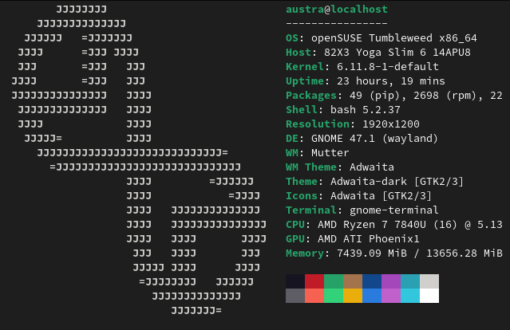

I got into Linux because of the customizability and freedom it offers, personally I prefer using the terminal for most applications as I find it much quicker.
openSUSE
I personally use openSUSE tumbleweed with the cute lizard, I love the constant updates that the rolling release model provides, but I've noticed that openSUSE is far more stable than other rolling release distributions. I run gnome with some mild theming on, though on my desktop I run KDE with a green mirror's edge theme. openSUSE has an easy snapshot system that allows you to rollback easily, and it uses the secure brtfs partition by default.
Manjaro is not a beginner distro
Manjaro personally destroyed my Windows dual boot install by reformatting the EFI partition as ext4. Manjaro developers required people to roll back their time and date, because they forgot to update the SSL certificates. But in general, AUR packages are not well integrated into the main distrubtion. In my opinion, beginners should avoid rolling release distributions. They always require some level of fixing.